CA — Canada
**Canada: a limited positive spillover from a 200bp cut in US rates**
The main impact of a 200 basis-point (2.00 percentage-point) cut in United States interest rates on Canada is a 0.10% rise in GDP by the 12th quarter — a limited spillover, not a large hit. Canada ranks fourth by absolute GDP response and sits in the "minimal" band. The shock is a US monetary easing, and the Canadian economy picks up modestly through the trade and financial channels rather than through any domestic policy action of its own.
**Demand and trade.** Household consumption rises gradually, peaking at 0.05% above baseline in Q12 and still 0.01% higher by Q20 — a slow, persistent demand impulse. Private investment is the strongest domestic demand component, peaking at 0.39% above baseline in Q9 before fading and turning slightly negative (−0.13%) by Q20 as the cost-of-capital boost unwinds. Net exports — this model does not split imports from exports, so net exports is simply the trade balance — fall to −0.15% below baseline at Q8, the deepest single drag in the demand block, and remain −0.03% below baseline at Q20. Government spending edges down to −0.01% at Q11, a trivial move, while government debt drifts up to 0.02% above baseline by Q17 as the small primary-balance effects accumulate.
**External / FX.** The real exchange rate falls to −1.05% below baseline at Q9. Because an increase in the real exchange rate is a real depreciation and a decrease is a real appreciation, this is a real appreciation of the Canadian dollar — the home currency strengthens against the baseline. That stronger real exchange rate is what weighs on net exports: the trade balance deteriorates to −0.15% at Q8, tracking the currency move closely. The RER remains −0.25% below baseline at Q20, so the appreciation is persistent rather than transient.
**Labour.** Employment rises to 0.09% above baseline at Q14, a modest but durable gain that never turns negative within the horizon. Unemployment falls to −0.05 percentage points below baseline at Q14, consistent with the employment gain. Real wages, however, decline to −0.14% below baseline at Q12 and remain −0.02% below baseline at Q20 — the labour market tightens in quantity terms while real compensation softens.
**Prices.** CPI inflation falls to −0.07 percentage points below baseline at Q2, the deepest point of the price response, before crossing back above baseline at Q10 and ending 0.01pp higher at Q20. Domestic inflation follows a similar profile, bottoming at −0.05pp at Q2 and turning positive at Q10. Firms' marginal cost rises to 0.06% above baseline at Q12, a modest cost-push that builds slowly and fades by Q19.
**Financial conditions.** The local policy rate falls to −0.12 percentage points below baseline at Q5, a small easing that mirrors the US move, then crosses above baseline at Q12 and ends 0.09pp higher at Q20. The 2-year government yield falls to −0.11pp at Q2, crosses above baseline at Q9, and ends 0.05pp higher. The 5-year yield rises to 0.05pp above baseline at Q12, and the 10-year yield rises to 0.02pp above baseline at Q13 — the curve steepens as the short end falls first and the long end later turns up. Bond prices rise to 0.70% above baseline at Q5, then fall to −0.52% below baseline by Q20 as yields rise. Equity prices rise to 0.38% above baseline at Q8 and fade to −0.01% below baseline at Q20. Tobin's Q — the value of installed capital — rises to 0.27% above baseline at Q9 and turns negative (−0.09%) by Q20. House prices rise steadily to 0.09% above baseline at Q16 and remain 0.08% higher at Q20. Bank credit supply edges up to 0.003% above baseline at Q16, a negligible move. The lending spread is flat at 0.00pp throughout — no credit-spread response in this simulation.
**Sectoral and capital.** Manufacturing GDP is the standout sectoral gain, rising to 0.32% above baseline at Q9 and still 0.08% higher at Q20 — the strongest single positive response in the whole table. Services GDP rises to 0.07% above baseline at Q12 and fades to 0.005% by Q20. The capital stock builds slowly, peaking at 0.02% above baseline at Q16 and remaining 0.02% higher at Q20.
**Timing.** The GDP response is largest at Q12, at 0.10% above baseline, and has mostly faded by Q19, ending at 0.01% above baseline in Q20. The equity peak arrives earlier, at Q8, and the investment peak at Q9. The price response bottoms earliest, at Q2. So the sequence runs: prices first, then financial conditions and investment, then GDP and employment, with the trade balance deteriorating throughout.
**Close.** These are model impulse responses versus baseline, not forecasts. They describe how the Canadian economy deviates from its own baseline path after a 200bp US rate cut, holding everything else at its baseline setting. Number check vs JSON: GDP peak +0.10%, CPI 3y -0.29pp, equity peak +0.38%.
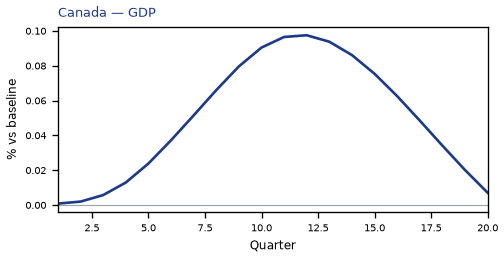
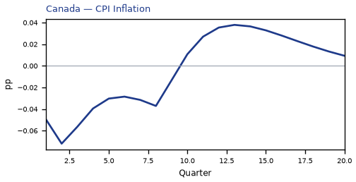
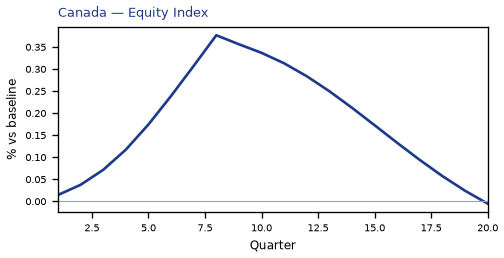
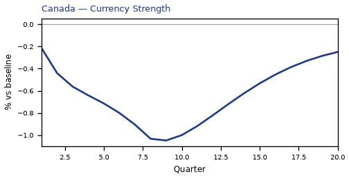
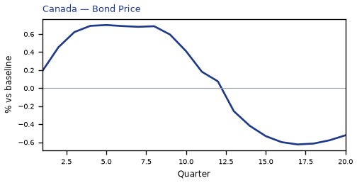
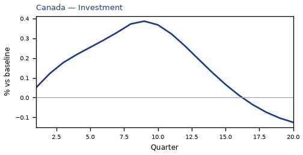
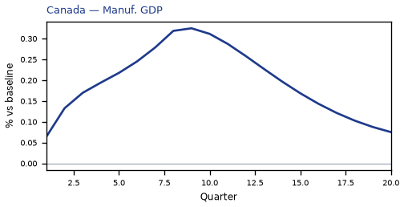
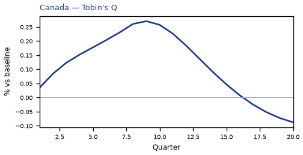
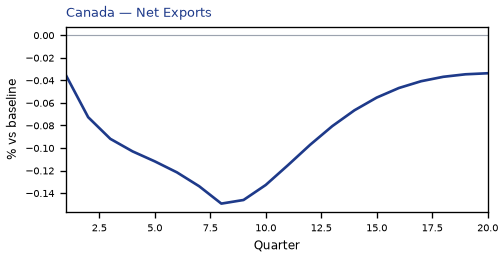
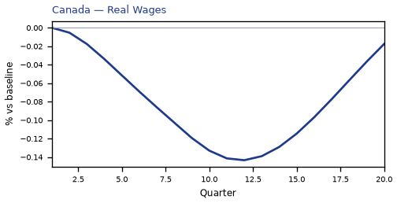

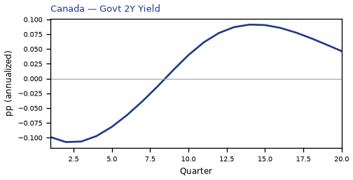
source=live · global_macro_v5 · contract v6 · Q1–Q20 JSON · not financial advice